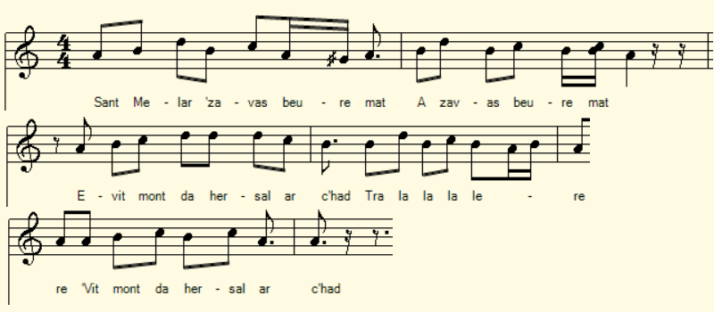
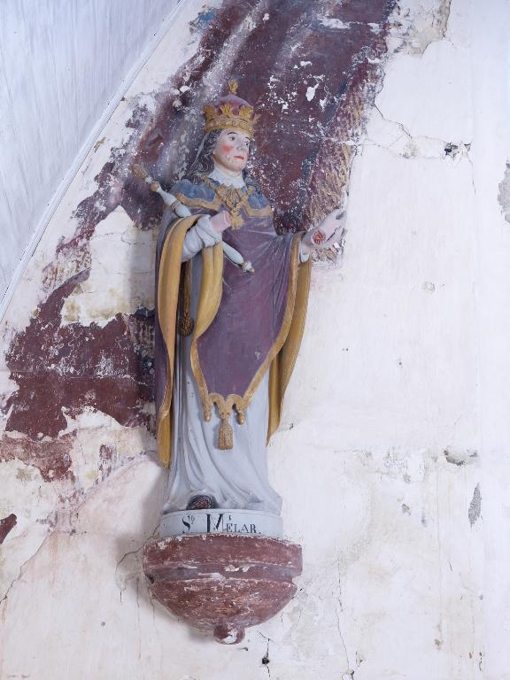
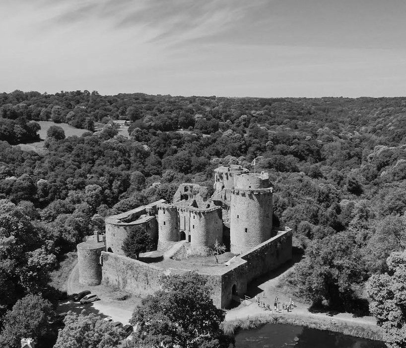

|
A propos de la mélodie: Inconnue. La mélodie ci-dessus est donnée à titre d'illustration. A propos du 3ème carnet C'est sur ce chant que s'ouvre le troisième carnet qui comporte 122 pages, numérotées à partir de la seconde de 1 à 118 au crayon rouge. Sur la 1ère page La Villemarqué a inscrit les dates des collectes: "1843, 1844 & ..." C'est au verso de la 1ère page de couverture, dans une pochette à soufflet, que l'on trouve les fameuses "tables des matières" de la Dame de Nizon. On y découvre également une double feuille où sont consignées les collectes de celle-ci: 2 chansons et un refrain à danser, ainsi qu'un minuscule carnet sur lequel Kervarker a écrit "Mon premier recueil de chants populaires à 8 ans et 1/2, 1824". Un chant intitulé "cansson" suit quelques notes de dépense: un "coutot", une toupit" ... "Si j'étais roi, disait Gros-Jean à Pierre, Je ne serais pas à garder les pourciaux, Je donnerais du pain noir à mon père, Je donnerais du pain blanc à ma mère, Si j'étais roi, si j'étais roi." On remarquera en passant que cette chanson est généralement attribuée à la Comtesse de Ségur. Dans "Les bons enfants", Valentine en lit 2 strophes à Sophie qui répugnait à les déchiffrer. Or ce roman pour la jeunesse parut en 1862. Quant à l'opéra comique d'Adolphe Adam intitulé "Si j'étais roi", il date de 1852. Il faut croire que les librettistes d'Ennery et Brésil et la comtesse née Rostopchine s'inspiraient d'un texte connu dès 1824. Peut-être en était-il de même de la jolie mélodie harmonisée par Adam... Ce carnet comprend davantage de notes et bien moins de textes de chansons que les deux autres. 10 pages sont consacrées à des proverbes que La Villemarqué intitule "lavaroù brezhoneg". 4 pages sont de la main de son épouse. Elles ont trait à la chouannerie dans la région de Briec. |
 Saint Mélar à la main coupée (chapelle de Plouzelambre) |
About the melody: Unknown. The above tune is suggested as an illustration. About the third collection book It is on this song that the third notebook opens. It has 122 pages, numbered, starting from the second page, 1 to 118 in red pencil. On the first page La Villemarqué noted the dates of the collections: "1843, 1844 & ..." On the back of the first cover page, in a gusseted pocket, we find the famous "Tables of contents" set up by the Lady of Nizon. There is also a double sheet on which are recorded the Lady's collection consisting in 2 songs and a country dance; as well as a tiny notebook on which Kervarker wrote "My first collection of popular songs, when I was 8 and 1/2 years old , 1824": a song entitled "cansson" follows a few notes of expenditure: a "coutot" (knife), a "toupit" (a spinning top) "If I were king, said Big-John to Peter, I wouldn't go on keeping the pigs, I would give black bread to my father, I would give white bread to my mother, If I was king, if I was king." It will be noted, by the way, that this song is generally attributed to the Comtesse de Ségur: in "Les bons enfants", little Valentine reads 2 stanzas to Sophie who was reluctant to decipher them. However, this novel for young people appeared in 1862. As for the comic opera by Adolphe Adam entitled "If I were king", it dates from 1852. The inference is that lyricists D'Ennery and Brazil and the "Countess née Rostopchin" were inspired by a text circulated as early as 1824. So was possibly the pretty melody harmonized by Adam... This third collection book includes more hints and notes and much less song lyrics than the other two. 10 pages are devoted to proverbs that La Villemarqué calls "lavaroù brezhoneg". 4 pages are from the hand of his wife. They relate Chouan warfare in the Briec area. |
|
BREZHONEK Sant Melar p. 1 1. Sant Melar ' zavas beure mat Evit mont da hersal ar c'had. 2. E Koad Berzet pa oa degou(ezh)et Ur goulmig wenn eñ-deus kavet 3. Hag eñ en-deveus hi heuliet Tre betek chapel Koad Berzet. [2] 4. Ar goulmig wenn ' eas er chapel Melar [3] war he lerc'h, kel ha kel. 5. (Hag [eno] e oa badezet.) [4] Ha [neuze Melar] a lare : [5] [6] ... 6. Kenavo Kastell Tonkedeg [7] Kerkoulz ha deoc'h, Hugenoded! - [8] 7. E Tonkedeg en aoter vras Sant Melar a oferennias. Chantée au milieu des ruines de Tonkedek [par] Mary surnommée Ar Chastel, gardienne (Sugardez) du château de Tonkedek KLT gant Christian Souchon (c) 2021 |
TRADUCTION FRANCAISE Saint Mélaire p. 1 1. Saint Mélaire de bon matin Chassait le lièvre [avec son chien]. 2. Quand il arrive au Bois-Berzet Une blanche colombe avait 3. Pris son vol. Il la suit, [ma foi,] Jusqu'à la Chapelle du Bois. [3] 4. Dans la chapelle elle est entrée Mélaire l'a vite imitée 5. (Et [c'est là qu]'il fut baptisé.) [4] [Juste après Mélaire] disait: [5] [6] ... 6. Adieu, Tonquédec, [beau] château, [7] Ainsi qu'à vous, les Huguenots! - [8] 7. Le grand-autel de Tonquédec Vit Saint Mélar officier. Chantée au milieu des ruines de Tonquédec [par] Marie surnommée "Ar Chastel", gardienne (sugardez) du château de Tonquédec Traduction Ch. Souchon (c) 2022 |
ENGLISH TRANSLATION Saint Melar p. 1 1. Saint Melar right early got up To go hare-hunting [with his pup]. 2. When at Berzet Wood he arrived A [beautiful] white dove he spied 3. And he followed her all the way To Berzet Church. [She came to stay]. [3] 4. Into the church she found entry And Melar followed her promptly 5. (He was baptized [at the said place]). [4] And he was heard saying [with grace:] [5] [6] ... 6. Tonquédec Castle, now farewell, [7] Tonquédec's Huguenots as well! - [8] 7. There at the high altar, alas, Saint Melar used to say the mass! Sung amidst the ruins of Tonquédec [by] Mary nicknamed "Ar C'hastel", guardian (Sugardez) of Tonquédec Castle Translated by Ch. Souchon (c) 2022 |
|
[1] Le château de Tonquédec On peut logiquement dater de la 1ère année consignée par La Villemarqué, l'épisode qui inaugure le carnet 3: 1843. Le chant considéré est interprêté par la gardienne du château de Tonquédec, une imposante ruine à une dizaine de km au sud de Lannion. Une note nous apprend que cette dame est connue sous le nom de "Mari Ar C'hastell" (Marie du Château) et qu'elle exerce, avec sa fille, la fonction de "sugardez eus-a Gastell Tonkedeg" (gardienne du château de Tonquédec). Les dictionnaires traduisent "sugard" par "garde forestier". Une description bucolique explicite une partie du chant: "Le château s'élève sur une colline au pied de laquelle serpente le Léguer [que franchit un] vieux pont...Dans le fond entre deux vallons, quand on monte sur une des 4 grandes tours, on aperçoit le toit d'une chapelle dédiée à Saint Mélar; c'est à propos de cette chapelle que Marie me chanta les strophes qui précèdent." [2] La Chapelle de Coat Berzet La chapelle est nommée dans le chant "Chapel Koad Berzet", Chapelle du Bois Berzet, un nom absent de la toponymie moderne de Tonquédec. Il n'y a pas aujourd'hui de chapelle dédiée à saint Mélar dans la commune de Tonquédec qui ne compte cependant pas moins de 4 chapelles aux dédicaces diverses: Vierge au Lac, Saint-Guénolé, Saint-Gildas, ND de Kerrivoalan. L'oratoire de Rubuduas (1713) est situé près d'une chapelle qui ne fut jamais achevée. L'église de Tonquédec est dédiée à Saint-Pierre. Le site http://www.infobretagne.com/tonquedec.html évoque d'anciennes chapelles, aujourd'hui disparues ou détruites, dont la chapelle Saint-Médard. Peut-être y a-t-il confusion avec Saint-Mélar. Peut-être Marie pensait-elle au "Kastell Veuzit" en Lanmeur (cf. ci-après). "Veuzit" est une forme mutée de "Beuzit" (de "beuz", le buis). A en juger par la photo du château ci-dessous, l'emplacement de la chapelle de 1843 est actuellement occupé par une crêperie. [3] Mélar, Mélaire ou Méloir de Cornouailles La référence obligée est l'ouvrage du moine morlaisien Albert Le Grand (début du XVIème siècle) dans l'édition de 1901 par les chanoines Thomas, Abgrall et Peyron, p. 487. En 537, après la mort de son grand-père Budic, roi de Domnonée, puis celle de son père Méliau tué par son oncle Rivode, le jeune prince Mélar âgé de 7 ans est confié à sa mère Haurille en qualité de tutrice. Rivode tente en vain d'empoisonner ce concurrent potentiel, puis décide de faire décapiter Mélar. Les exécutants se ravisent et choisissent damputer Mélar de sa main droite et de son pied gauche, lempêchant ainsi "de manier lépée, de monter à cheval, ni faire aucune action de guerre", ce qui l'écartait du pouvoir. Rivode ne put obtenir la garde de son neveu de ses "états en la ville de Carhaix". Lorsque les blessures de Mélar furent cicatrisées, on lui confectionna une main dargent et un pied dairain qui, miraculeusement, grandissaient en même temps que son corps, lui permettant de compléter sa formation de chevalier. Le jeune Mélar vécut dès lors auprès de l'évêque de Cornouaille, s'adonnant à la prière et aux études saintes. Toujours menacé par son oncle, il se réfugie à Lanmeur, à La Boissière, un château connu également sous le nom de "Kastell-Veuzit". L'homme de main de Rivode le retrouve, linvite à dîner dans lhostellerie de la ville. Au moment de se séparer, son fils assène un grand coup dépée sur la tête de Mélar avant de le décapiter. Il senfuit après avoir mis la tête dans un sac. Les trois assassins moururent misérablement dans les trois jours qui suivirent. [4 ]Le saint de Lanmeur On plaça le corps de Mélar sur un char pour être conduit à Lexobie près de Lannion, où se trouvaient les tombeaux de ses ancêtres. Les chevaux blancs qui tiraient lattelage, après que le char se fût rompu, sarrêtèrent dans la ville de Lanmeur, à lendroit ou se situe léglise daujourdhui: Dieu voulait que le corps du saint fût enterré à cet endroit ou coulait un petit ruisseau à ciel ouvert. Aussi lévêque de Dol bénit-il ce lieu et y fit inhumer le corps qui y resta jusqu'aux invasions normandes. Ses reliques furent transportées à Paris à l'église Saint Jacques du Haut-Pas et elles sont aujourd'hui à l'abbaye de Boquen (diocèse de St Brieuc) où Dom Alexis Presse, abbé, les avait fait revenir en Bretagne en 1953 pour dynamiser un renouveau spirituel vis à vis des vieux saints Bretons. La tête du saint fut récupérée chez Rivode par l'évêque de Quimper qui la mit au trésor de sa cathédrale. A Lanmeur, le sarcophage en granit disparu au 19 ème siècle était sans doute protégé par une construction. Ce nest que plus tard que fût érigée, à l'époque romane ou pré-romane, la crypte de Saint Mélar au-dessus de laquelle fut ensuite construite une église dédiée à Saint Mélar. Au pied de laccès nord à la crypte, une petite « fontaine » se remplit en permanence deau claire, sans que lon sache vraiment ni doù vient cette eau, ni où elle va. (source: https://www.lanmeur.fr/vivre-a-lanmeur/patrimoine/220-sur-les-pas-de-saint-melar-onglets). [5] Les "vitae" de Saint Melar Toutes les sources anciennes ne donnent pas de ces événements la même version. André Yves Bourgès dans sa thèse "Dossier hagiographique de Saint Mélar, Prince et Martyr, en Bretagne armoricane (VIème siècle?)" déposée le 17 .11.1996 à la IVème section de l'Ecole pratique des Hautes Etudes (https://www.persee.fr/doc/ephe_0000-0001_1996_num_12_1_10767), précise qu'il existe 2 "vitae" de ce saint dont procèdent tous les textes le concernant. La première date d'entre 1066 et 1084 et sert de "mode d'emploi" des reliques vénérées à Lanmeur (près de Saint-Jean-du-Doigt) et de justification des droits de la maison de Cornouaille en Trégor. Elle servit de modèle, notamment à Meaux, pour remplir le même office pour des reliques d'autres saints. La seconde qui se diffusa à partir du milieu du 14ème siècle, date du début du 13ème siècle. Elle se veut plus historiographique. La confusion avec un presque-homonyme se constate dès la 1ère Vita qui relève de plusieurs "genres", "passio, miracula et translatio" (passion, miracles et transfert de reliques) et présente des "points de contact" avec la biographie de Saint-Malo composée par le diacre Bili. Ce dernier ignore la légende des prothèses magiques qui rattachent pourtant ce récit à la mythologie irlandaise (le dieu-roi Nuadu à la main d'argent). On notera que ces diverses sources n'accordent aucune importance particulière au baptème de Mélar et ignorent l'épisode de la colombe blanche que la présente gwerz a en commun avec une pièce collectée par Luzel, "Le roi de Romani" ("Gwerzioù Breizh-Izel, tome I", page 178, 1867, str. 1 et 7). [6] Les toponymes en l'honneur de Melar Plus généralement, si on se réfère à l'étude que Denis-Bernard Grémont consacra à "Saint Melar, Melor ou Méloire (Bulletin de la Société archéologique du Finistère), n° 102, 1973, pp. 285 à 361, on constate qu'il existe, en Bretagne et en Cornwall, une multitude de toponymes contenant un de ces trois noms, soit seuls (Meilars près de Pont-Croix, Mylor près de Falmouth...), soit combinés avec "Tre" (Tréméloir près de Saint-Brieuc, Tremeler en Neuillac, Lestrémelar...) ou "Lan" (un seul lieu-dit, Lanvéler en Plabennec) ou encore les plus récents "Loc" (Locmélar près de Sizun et Plounéventer, Lomener dans l'île de Groix). D'innombrables chapelles sont dédiées à ce saint, comme celle de notre gwerz, à Tonquédec. D.-B. Grémont est d'avis que le nom de Melar recouvre 3 ou 4 personnages différents: un ermite de Serk, un Magloire soi-disant évêque de Dol, un autre connu dans les régions de Crozon et Châteaulin et le petit prince martyre de Lanmeur qui aurait éclipsé un missionnaire venu de Cornouailles britannique, l'abbé évêque Mélor dont parle le chanoine G.-H. Doble dans "The Saints of Cornwall", Oxford 1964. Ces confusions entre différents personnages expliquent quelques bizarreries comme l'existence d'autres tombes de Saint Melar que celle de Lanmeur (comme à Kerverret en Lanloup) ou de statues du saint dépourvues de la fameuse main d'argent. [7] Les propriétaires de Tonquédec Pages 2 et 3 de son carnet, La Villemarqué a noté les noms de personnages dont le destin est lié à Tonquédec: Il note cependant: "Cette tradition est inexacte (v. Moreau, Liscoet)". [8]Les Huguenots de Tonquédec Le site https://tonquedeccom.wordpress.com/histoire-history-2/ résume ainsi l'histoire du château: "Sa construction commencée au XIIème siècle par la Famille de Coëtmen-Penthievre, issue des Ducs de Bretagne, se poursuivra jusquau XVème siècle. Après un premier démantèlement, en 1385, sur ordre du Duc Jean IV, lors de la rébellion dOlivier de Clisson auquel les Coëtmen sétaient alliés, Roland IV de Coëtmen, Vicomte de Tonquédec, débute sa reconstruction en 1406. Tout au long du XVème, ses successeurs sattacheront à lagrandir, le compléter, le moderniser et à ladapter au développement de lartillerie. Dans la première partie du XVIème siècle et jusquà la première moitié du XVIIème, par le jeu des successions, le domaine devient propriété de la famille dAcigné, puis de la famille Gouyon de la Moussaye qui entreprendra la réparation et le complément de lenceinte de lavant cour. Vers 1626, le château, considéré comme dangereux pour le pouvoir royal, est finalement démantelé sur ordre de Richelieu. En 1636, le château en ruine est acheté par René de Quengo qui ajoutera à son nom celui de Tonquédec, sans lien avec les Coëtmen, Vicomtes de Tonquédec. Un long déclin se poursuivra les siècles suivants. En 1749, Julie Baronne de Coëtmen, ultime héritière de la famille, épouse Pierre François, Marquis de Rougé. Les Rougé, ses descendants sont alors les derniers Barons de Coëtmen avant la Révolution. Après être passé en diverses mains, en 1879 lensemble est vendu par la famille de Quengo à un marchand de biens qui envisage de lexploiter en carrière, en vendant les pierres à lunité. En 1880, le marquis de Keroüartz parvient heureusement à acquérir les ruines du château et les offre à sa fille Eugénie, qui épouse le Comte Pierre de Rougé, descendant en ligne directe des Seigneurs de Coëtmen, bâtisseurs du Château! Depuis, génération après génération, leurs successeurs restaurent progressivement lédifice, en particulier depuis 1950, accompagné des Architectes des Monuments Historiques. Aujourdhui encore, le Château de Tonquédec, désormais propriété de leur descendante, poursuit son histoire..." La famille Gouyon de La Moussaye qui entreprit d'adapter le château à l'artillerie entre 1577 et 1582 est protestante. Elle soutient donc le roi Henri IV durant toutes les guerres de la Ligue, en désaccord avec la population locale restée très catholique. C'est ce qui explique la présence du mot "Huguenots" à la strophe 6. |
[1] Tonquédec Castle We can logically date from the 1st year recorded by La Villemarqué, the episode which inaugurates notebook 3: 1843. The song in question is interpreted by the guardian of the castle of Tonquédec, an imposing ruin about ten km south of Lannion. A note informs us that this lady is known under the name of "Mari Ar C'hastell" (Mary of the Castle) and that she exercises, with her daughter, the function of "sugardez eus-a Gastell Tonkedeg" (guardian of the castle of Tonquédec). Dictionaries usually translate "sugard" as "ranger". A bucolic description explains part of the song: "The castle stands on a hill at the foot of which winds the Léguer river [crossed by an] old bridge...At the bottom between two valleys, when you climb one of the 4 large towers, you can see the roof of a chapel dedicated to Saint Melar. This chapel is mentioned in the stanzas Marie sang to me." [2] The Chapel of Coat Berzet The chapel named in the song "Chapel Koad Berzet", Chapelle du Bois Berzet, is absent from the modern toponymy of Tonquédec. Today there is no chapel dedicated to Saint Mélar in the parish Tonquédec, which however has no less than 4 chapels with various dedications: Our Lady of the Pond, Saint-Guénolé, Saint-Gildas, ND de Kerrivoalan. The oratory of Rubuduas (1713) is located near a chapel which was never completed. Tonquédec church is dedicated to Saint-Pierre. The site http://www.infobretagne.com/tonquedec.html evokes old chapels, which are no more extant or were destroyed, including a Saint-Médard chapel. Perhaps there is a confusion with Saint-Mélar. Maybe Marie thought of "Kastell Veuzit" near Lanmeur (see below), "Veuzit" being a mutated form of "Beuzit" ( from "beuz", box wood). Judging by the photo of the fortress below, the alleged location of the 1843 chapel is currently occupied by a crêperie. [3] Melar, Melaire or Cornouaille Meloir The obligatory reference is the work of the Morlaisian monk Albert Le Grand (early 16th century) in the 1901 edition by the canons Thomas, Abgrall and Peyron, pp. 487. In 537, after the death of his grandfather Budic, king of Domnonée and the death of his father Méliau, killed by his uncle Rivode, the young prince Mélar, aged 7, was entrusted to his mother Haurille as guardian. Rivode tried in vain to poison this potential competitor. Rivode then decides to have Mélar beheaded. The apointed murderers changed their minds and decided to amputate Mélar of his right hand and his left foot, thus preventing him "from wielding the sword, friding a horse, or doing any act of war", which excluded him from the throne. Rivode could not obtain the guardianship of his nephew from his "estates in the town of Carhaix". When the latter's wounds were healed, a silver hand and a brazen foot were made for him which miraculously grew along with his body, allowing him to complete his training as a knight. The young Melar lived from then on under the custody of the Bishop of Cornouaille, devoting himself to prayer and holy studies. Still threatened by his uncle, he took refuge in Lanmeur, at La Boissière Castle also known as "Kastell-Veuzit". Rivode's henchman found him, invited him to dinner in the inn of the city. At the moment of parting, his son struck a great blow with his sword on the head of Mélar and beheaded him. He fled after putting his head in a bag. The three murderers died miserably within three days. [4] The Saint of Lanmeur Count Conomor had the body placed on a chariot to be taken to Lexobie near Lannion, where the tombs of his ancestors were. The animals that pulled the team, after the chariot had broken, stopped in the town of Lanmeur, at the place where the church is located today: God wanted the body of the Saint to be buried at this place where a small open-air stream flowed. The bishop of Dol also blessed this place and had the body buried there, which remained there until the Norman invasions. His relics were transported to Paris to the church of Saint Jacques du Haut-Pas and they are today at the abbey of Boquen (diocese of St Brieuc) where Father Alexis Presse, abbot, had brought them back to Brittany in 1953 to energize a spiritual renewal vis-à-vis the old Breton saints. The saint's head was recovered from Rivode by the bishop of Quimper who put it in the treasury of his cathedral. In Lanmeur, the granite sarcophagus (disappeared in the 19th century) was probably protected by a construction. Only later on the crypt of Saint Mélar was erected, in Romanesque or pre-Romanesque times, above which a church dedicated to Saint Mélar was then built. At the foot of the northern access to the crypt, a small "fountain" is constantly filled with clear water, without anyone really knowing where this water comes from or where it is going. (source: https://www.lanmeur.fr/vivre-a-lanmeur/patrimoine/220-sur-les-pas-de-saint-melar-onglets). [5] The "vitae" of Saint Melar Not all ancient sources give the same version of these events. André Yves Bourgès in his thesis "Hagiographic file of Saint Mélar, Prince and Martyr, in Armorican Brittany (VIth century?)" submitted on 17.11.1996 to the IVth section of the Ecole Pratique des Hautes Etudes (https://www. persee.fr/doc/ephe_0000-0001_1996_num_12_1_10767), specifies that there are 2 "vitae" of this saint from which proceed all the texts concerning him. The first dates from between 1066 and 1084 and serves as a "manual" for the relics venerated at Lanmeur (near Saint-Jean-du-Doigt) and as justification for the rights of the house of Cornouaille in Trégor. She served as a model, notably in Meaux to fulfill the same office for the relics of other saints. The second, which spread from the middle of the 14th century, dates from the beginning of the 13th century and is more historiographical. The confusion with an almost-homonym can be seen from the 1st Vita which falls under several "genres", "passio, miracula and translatio" (passion, miracles and transfer of relics) and presents "points of contact" with the biography of Saint-Malo composed by Deacon Bili. The latter ignores the legend of the magic prostheses which nevertheless links this story to Irish mythology (the god-king Nuadu with the silver hand). It should be noted that these various sources do not attach any particular importance to the baptism of Melar and ignore the episode of the white dove which the gwerz at hand has in common with a piece collected by Luzel, "The King of Romani" ("Gwerzioù Breizh-Izel, tome I", page 178, 1867, stanzas 1 and 7) . [6] Toponyms in honour of Melar More generally, if we refer to the study that Denis-Bernard Grémont devoted to "Saint Melar, Melor or Méloire (Bulletin of the Archaeological Society of Finistère, n° 102, 1973, pp. 285 to 361), we find that n Brittany and Cornwall, there are a multitude of toponyms containing one of these three names, either alone (Meilars near Pont-Croix, Mylor near Falmouth...), or combined with "Tre" (Tréméloir near Saint-Brieuc, Tremeler en Neuillac, Lestrémelar...) or "Lan" (a single locality, Lanvéler en Plabennec) or even the more recent "Loc" (Locmélar near Sizun and Plouneventer, Lomener on the island of Groix). Countless chapels are dedicated to this saint, such as the chapel in our gwerz near Tonquédec castle. D.-B. Grémont is of the opinion that the name of Melar covers 3 or 4 different characters: a hermit from Serk, Magloire allegedly a bishop of Dol, another Magloire known in the Crozon and Châteaulin aeras and the little martyred prince of Lanmeur who could have eclipsed a missionary from Cornwal, the Abbot Bishop Mélor addressed by Canon G.-H. Doble in "The Saints of Cornwall", Oxford 1964. These confusions between different characters explain some oddities such as the existence of other tombs of Saint Melar than that of Lanmeur (as in Kerverret near Lanloup) or statues of the saint devoid of the famous silver hand. [7] The owners of Tonquédec Pages 2 and 3 of his notebook, La Villemarqué noted the names of characters whose names are linked to Tonquédec: He notes however: "This tradition is inexact (v. Moreau, Liscoet)". [8] The Huguenots of Tonquédec The site https://tonquedeccom.wordpress.com/histoire-history-2/ summarizes the history of the castle as follows: "Its construction initiated in the 12th century by the Coëtmen-Penthievre family, descended from the Dukes of Brittany, will continue until the 15th century. After a first dismantling in 1385 by order of Duke Jean IV, during the rebellion of Olivier de Clisson with which the Coëtmen had joined forces, Roland IV de Coëtmen, Vicomte de Tonquédec began its reconstruction in 1406. Throughout the 15th century, his successors endeavored to enlarge, complete, modernize and adapt it to the development of artillery. In the first part of the 16th century and until the first half of the 17th century, through succession, the estate became the property of the Acigné family, then of the Gouyon de la Moussaye family, which undertook the repair and completion of the forecourt enclosure. Around 1626, the castle, considered dangerous for the royal power, was finally dismantled by order of Richelieu. In 1636 the castle in ruins was bought by René de Quengo, who added to his name that of Tonquédec, unrelated to the Coëtmen, Viscounts of Tonquédec. A long decline will continue the following centuries. In 1749, Julie Baronne de Coëtmen, ultimate heiress of the family, married Pierre François, Marquis of Rougé. The Rougé, his descendants, were the last Barons of Coëtmen before the Revolution. After passing through various hands, in 1879 the set was sold by the Quengo family to a property dealer who planned to exploit it as a quarry, selling the stones individually. In 1880, the Marquis de Keroüartz fortunately managed to acquire the ruins of the castle and offered them to his daughter Eugénie, who married Count Pierre de Rougé, a direct descendant of the Lords of Coëtmen, builders of the Castle. ! Since then, generation after generation, their successors have gradually restored the building, in particular since 1950 accompanied by the Architects of Historic Monuments. Even today, the Château de Tonquédec, now owned by their descendant, continues its history..." The Gouyon de La Moussaye family, which undertook to adapt the castle to artillery between 1577 and 1582, was Protestant, therefore for King Henri IV and during all the wars of the League, in disagreement with the local population which remained very Catholic. This explains the presence of the word "Huguenots" in stanza 6. |
